If I were to tell you a PC has a floppy drive, optical drive, Sound Blaster card, serial, parallel and PS/2 ports running DOS, you would think I’m referring to a machine from the 1990s. But my very modern PC built in 2024 possess these characteristics!
I recently built myself a PC as my previous desktop PC was insufficient for my current needs. I decided to build one with the ability to still reach back into the past to run DOS.
In this post, I will go through my thought process I went through to decide on the specifications as well as the journey I made to run MS-DOS 6.22 on it.
Demo video
Here is a video showing this system running MS-DOS 6.22 like it was in the 1990s and some demo applications.
- 00:27 - POST screen
- 00:32 - Boot menu. Select external USB reader.
- 00:39 - DOS 6.22 startup menu. Select option to enable SBEMU and Packet driver
- 00:48 - CPU Identification Utility
- 00:50 - Doom
- 01:41 - Planet X3
- 02:27 - Descent demo (too fast to be played properly)
- 03:42 - DOS ChatGPT client
- 06:41 - HWiNFO
Requirements
Before I first built this PC, I thought through some of the personal requirements for my new desktop.
- Experiment with light machine-learning (ML) workloads
- Run modern games like Cyberpunk 2077, Black Myth: Wukong, Flight Simulator 2020 and upcoming FS 2024 at reasonably good settings and performance
- Basic video editing
- Running virtual machines
- Lower cost by retaining as much parts as possible from my previous build
- Low power consumption for the performance
- Vintage experiments where feasible
Specifications at a glance
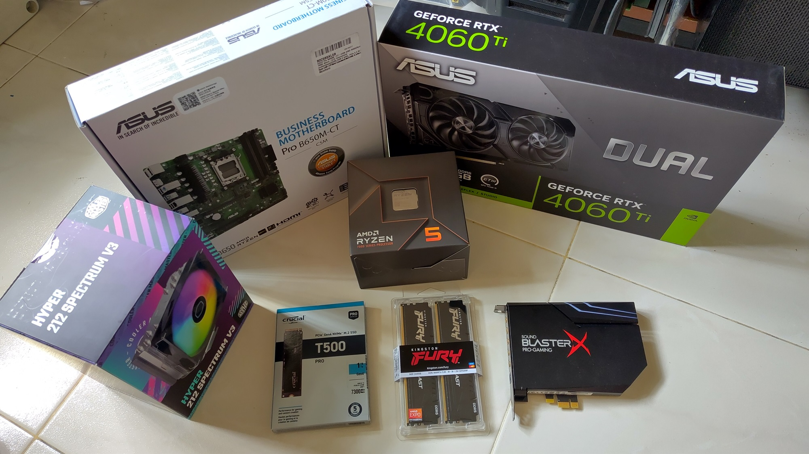Photo shows what was purchased. Most of everything else was retained from my previous build
- AMD Ryzen 5 7600 3.8Ghz AM5 socket
- Asus Dual GeForce RTX 4060 Ti EVO OC 16GB
- ASUS Pro B650M-CT-CSM motherboard
- 2x32GB DDR5-5600 CL36 Kingston Fury
- Coolermaster Hyper 212 Spectrum V3 CPU cooler
- 1TB NVME Crucial T500
- From previous build
- Seasonic S12II 520W PSU (non-modular)
- Coolermaster N400 midtower ATX case
- Creative Sound BlasterX AE-5
- 512GB NVME Samsung 970 Evo Plus
- 1TB SATA Crucial MX300
- 3.5" floppy Drive with internal USB adapter
- LG Blu-ray Rewriter SATA
- 5.25" USB 3.0 ports and card reader
- Xircom Pocket Ethernet 3 (PE3) 10Mbps Parallel Port Network adapter
Selection decisions
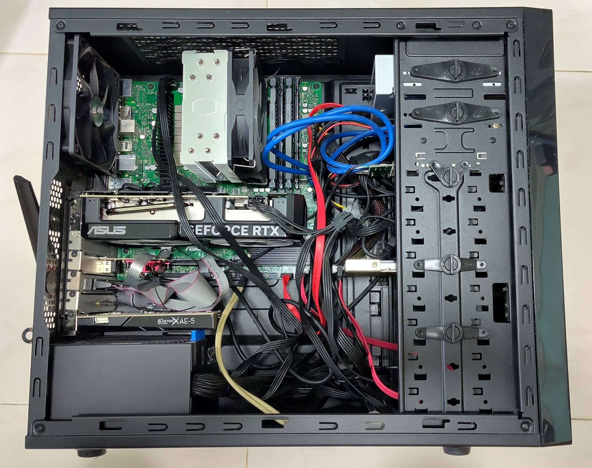The result of all my choices.
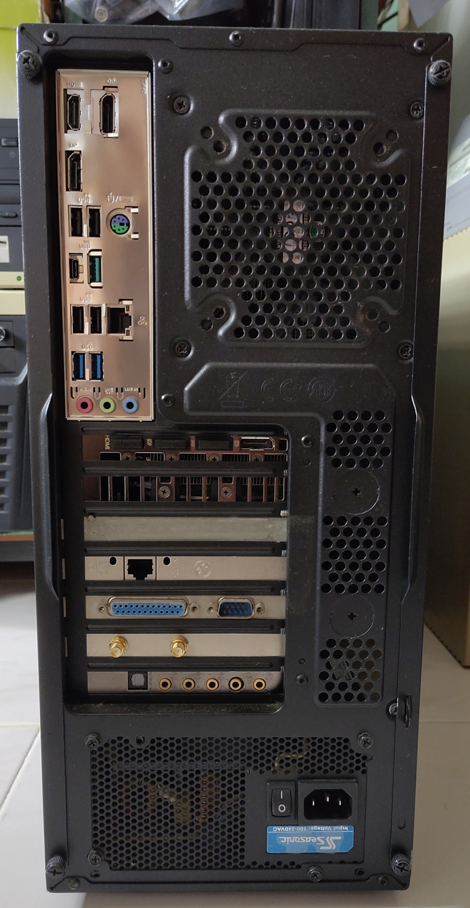Rear of the system showing a combination of modern and vintage ports.
Motherboard - ASUS Pro B650M-CT-CSM
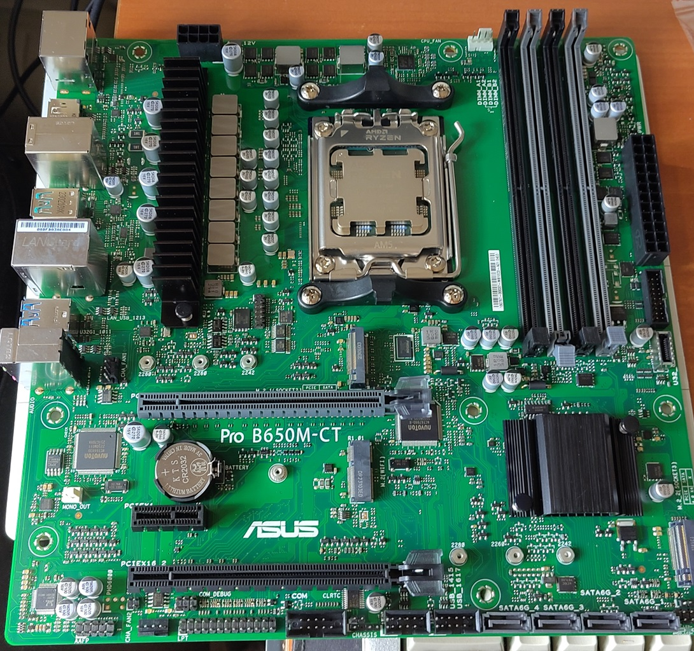This ASUS Pro B650M-CT-CSM motherboard is from a business-oriented line. Not a choice a typical consumer or PC gaming enthusiast would usually make.
I wanted a modern yet lower cost motherboard using an AM5-based chipset with DDR5 RAM so it can have some future proofing. AMD has commited to support AM5 to 2027.
But that alone does not explain why I chose this motherboard as there are plenty around that have AM5 support. The true reason is that it has a native parallel port!
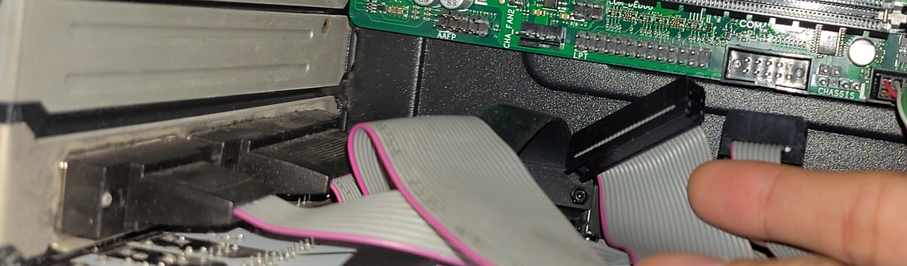It has COM and LPT headers on the bottom which can be brought out to actual ports with ribbon cables. LPT is a very rare feature on a such a modern motherboard. The only other modern board that I know that has an LPT port is the Asus Pro A620M-C-CSM of a similar product line but uses a less capable A620 chipset.
I wanted a parallel port to experiment with vintage applications like Covox Speech Thing, sound and network adapters.
PCI-E cards with parallel port exist and I have used those before. The issue with those is that they are not mapped to the traditional parallel port address like 0x378. Vintage applications sometimes are hardcoded to use those addresses. Only a motherboard with native support can have access to this address directly.
This motherboard also has a PS/2 port which is getting more uncommon with modern boards. I wanted this port as I still use PS/2 peripherals. A PS/2 port is also a strong indication that this board supports UEFI-CSM which is key requirement in running DOS.
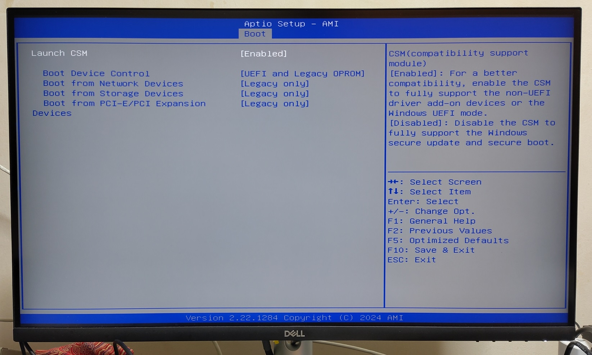As expected, the motherboard supports UEFI-CSM. However the option will only be enabled if there is a discrete graphics card present. It seems the integrated AMD Radeon graphics in the CPU does not have a compatible legacy video BIOS.
CPU - AMD Ryzen 5 7600
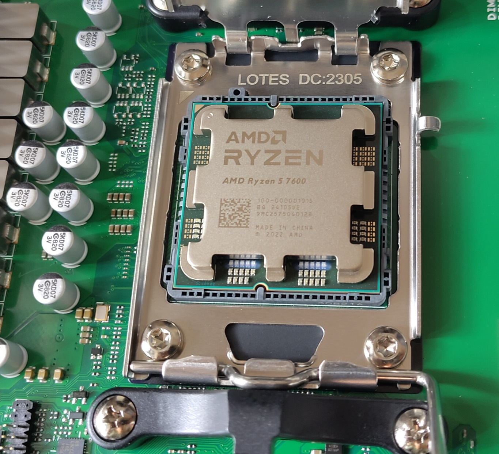I chose the 6-core AMD Ryzen 5 7600 as it’s one of the lower cost AM5 CPUs out there. It is a 65W TDP CPU so it should alleviate the need to replace my 520W power supply unit (PSU).
I did consider the slightly more expensive 7600X but it has 105W TDP. Even though you can enable ECO mode in software/BIOS to make it behave like a 65W part, I decided against this to avoid taking the risk of straining my PSU in case the ECO mode is accidentally disabled.
If I have greater processing needs in future, I can upgrade to a future AM5 CPU and PSU down the road.
Graphics card - Geforce 4060 Ti 16GB
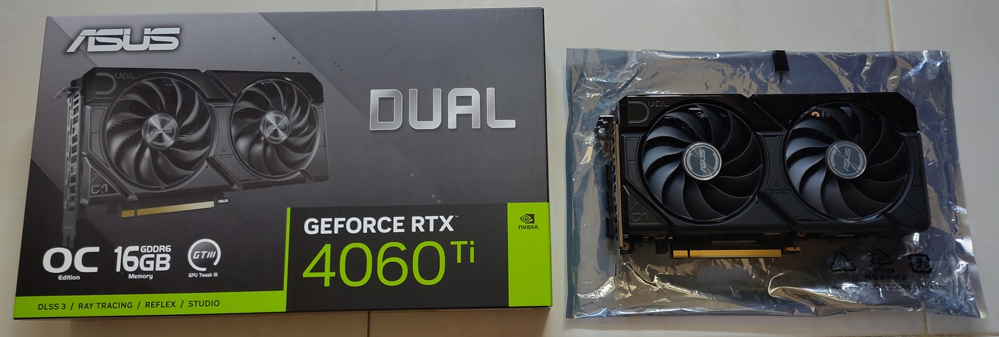Online reviews of the 4060 (Ti) are mostly negative for their poor price to performance ratio. I agree with them, if gaming is the only focus, these are poor value for money.
I selected this because this is one of the cheapest modern 16GB Nvidia cards which is more useful for hobbyist experiments in light ML workloads over just gaming performance. This unit excels at price to video RAM ratio which most reviewers neglect to consider.
Power consumption is similar to my previous Geforce 1070 so I don’t have to spend more to upgrade my PSU. This card also uses the traditional 8-pin PCIe power connector instead of the 16-pin 12VHPWR connector used on more power-hungry cards. 12VHPWR will cause extra clutter for another adapter cable to convert my existing power connectors to it.
RAM - 2x32GB DDR5-5600 CL36 Kingston Fury
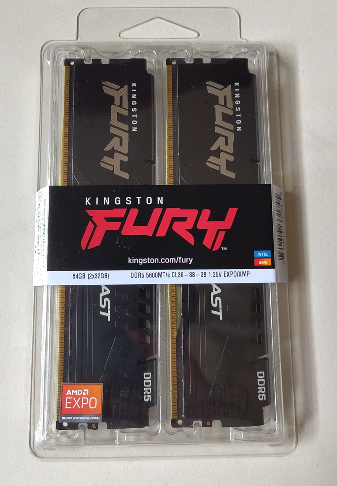I got 64GB of total RAM primarily to run virtual machines and light ML workloads. For most applications like gaming, 32GB is actually sufficient.
At DDR5-5600 CL36 speed, I believe this is more than sufficient for my needs as looking at online benchmarks, faster speeds and latencies don’t seem to move the needle much on gaming performance.
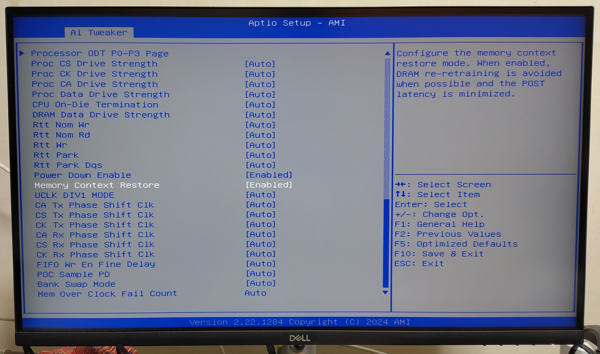With this RAM, the board seems to take a long time to POST on every boot. Something like at least a minute. Based on online research, it is because the motherboard needs to find an optimal set of timings to work with the RAM. This has always been done for previous RAM generations but is an issue now because it takes a significant amount of time for DDR5.
To mitigate this, enable both “Power Down Enable” and “Memory Context Restore” to avoid lengthy DDR5 training during POST.
Storage
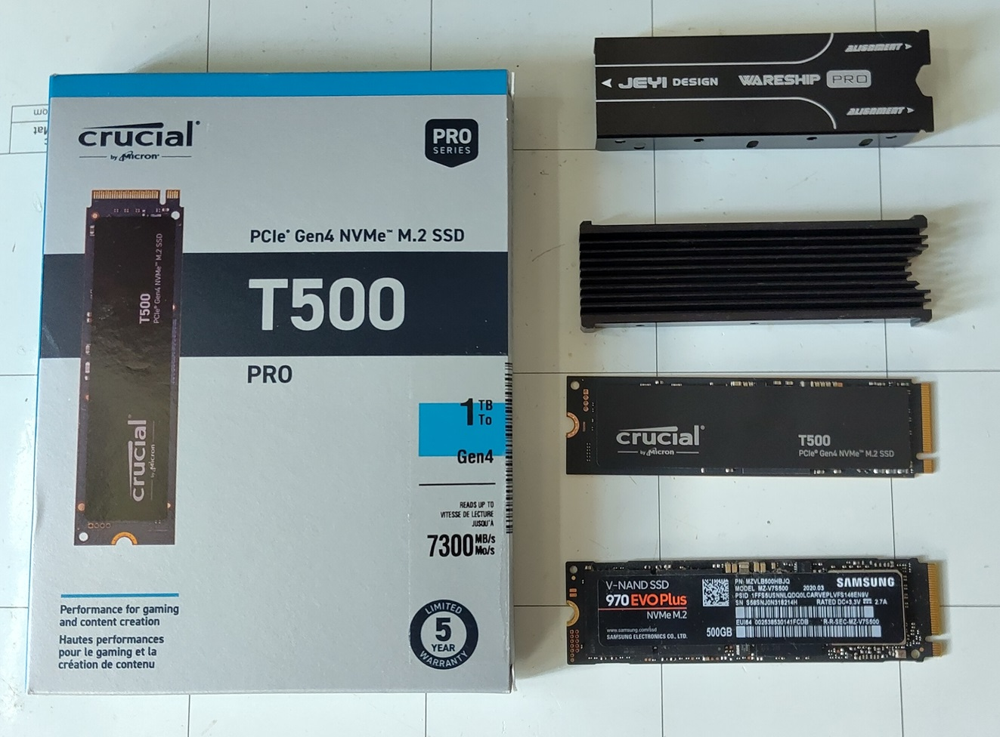I got a PCIe 4.0 1TB NVME Crucial T500 as my boot drive.
The Crucial T500 comes in versions with or without a heatsink. I opted for the one without a heatsink and bought my own as my research says that the one with heatsink cannot be removed without voiding warranty. I want to have the flexibility to move this to another system like a laptop or motherboard with NVME heatsinks.
Although this motherboard supports PCIe 5.0 NVME drives, those are very expensive and don’t seem to provide much value for me. PCIE 5.0 NVME drives also generally produce more heat and require larger heatsinks.
The PCIe 3.0 Samsung 970 Evo Plus was my previous boot drive is now my secondary drive.
Sound card - Creative Sound BlasterX AE-5
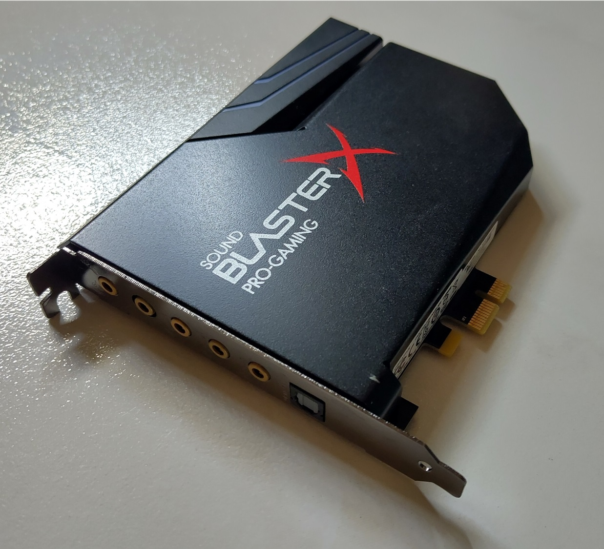Dedicated sound cards are now a rare sight in modern PC desktops as most onboard sound chips are good enough for most people. I however still opt to use one due to better sound quality and ports like TOSLINK optical which this motherboard does not have.
This Creative Sound BlasterX AE-5 from my previous build has a software feature called Creative ALchemy. It enables one to use Creative’s Environmental Audio Extensions (EAX) feature in older games on modern systems. Although it legitimately carries the Sound Blaster name as it is a Creative product, it is too modern to have vintage DOS Sound Blaster support.
Another less technical reason is to support a local Singaporean company.
Floppy
The floppy drive is an interesting one. This motherboard does not have a native floppy header which is unsurprising. I highly doubt there is a new modern motherboard that still has one.
So how did I have a floppy drive on the front panel?
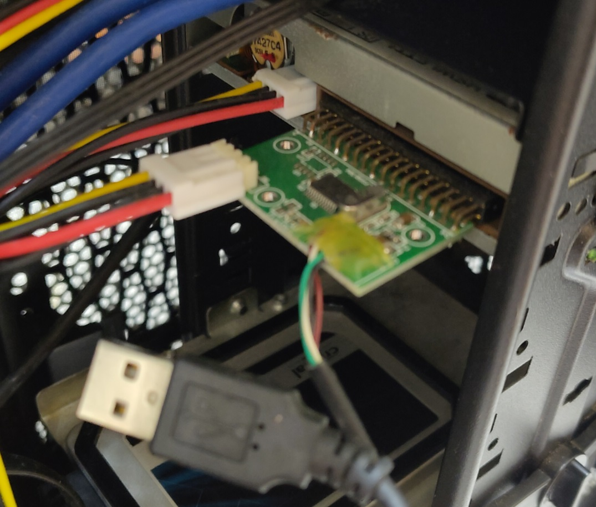I used a USB adapter. It converts the 34-pin floppy interface to the USB interface. Then I connect it to the motherboard’s internal USB 2.0 header. It is readily available on Aliexpress.
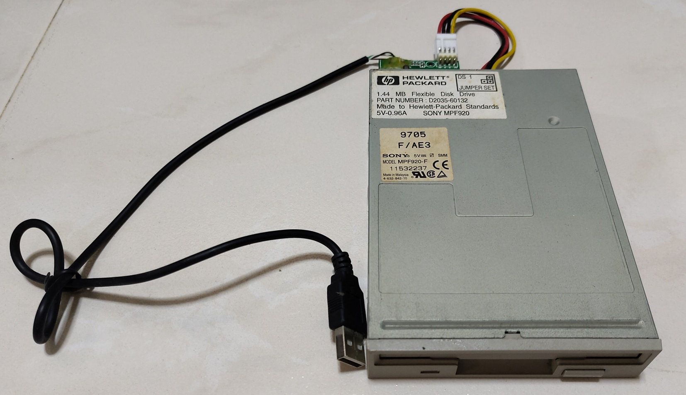A conventional floppy drive converted to modern use!
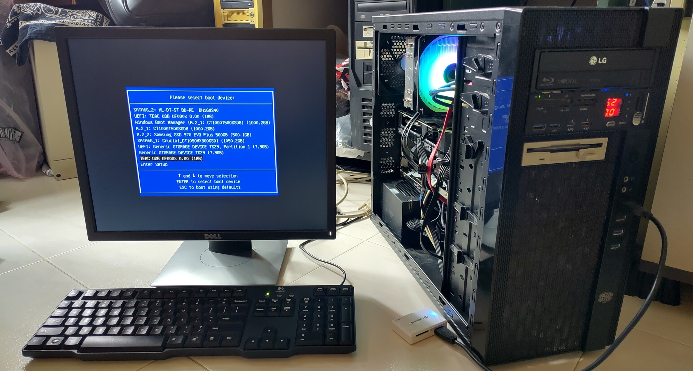The motherboard recognises this as a USB floppy drive and is selectable as one of the boot options.
Networking - Xircom Pocket Ethernet 3 (PE3) 10Mbps
I initially tried to use the onboard Realtek RTL8168 Gigabit chip. Realtek provides a DOS-compatible NDIS2 driver on their website. The NDIS2 driver could detect the network chip but I could not get them working with the DOS MTCP utility.
As my backup plan, I resorted to using a parallel-port-based Xircom PE3 10 Mbps adapter. Thanks to the motherboard’s parallel port!
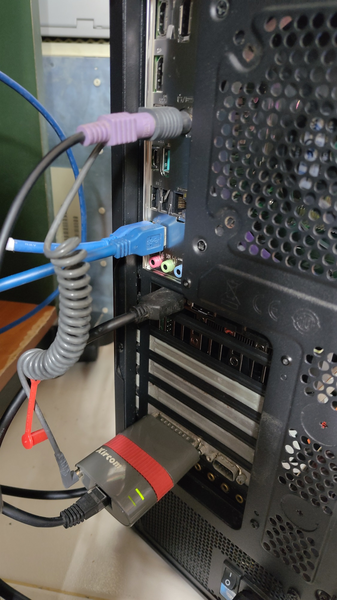The adapter is powered from the PS/2 port with a passthrough so it still can be used with other PS/2 devices.
DOS
Installing DOS
To avoid clobbering my NVME drives, I have DOS installed onto an external microSD card connected through a USB adapter. To avoid any issues, I temporarily removed all existing NVME and SATA SSDs to avoid accidentally overwriting them.
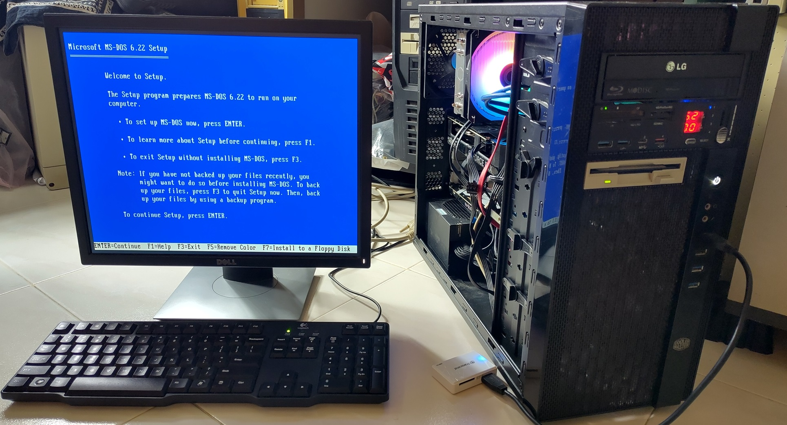I ran the DOS setup from a good old floppy disk!
A minor hiccup is making sure to run fdisk /mbr to recreate the drive’s master boot record as I found that the drive is unbootable without that.
DOS configuration
In order to consider a machine as “properly” set up, my personal definition is that it should have working audio and networking.
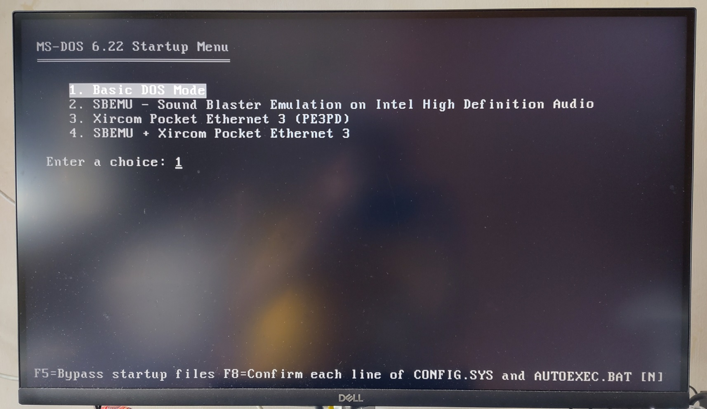Despite the large 64GB RAM in the system, conventional memory is still limited to 640KB. I set up a DOS menu configuration to load different sets of driver configuration depending on my needs at the moment.
For the detailed config.sys and autoexec.bat files I used, you can go to this Github repo link.
DOS drivers
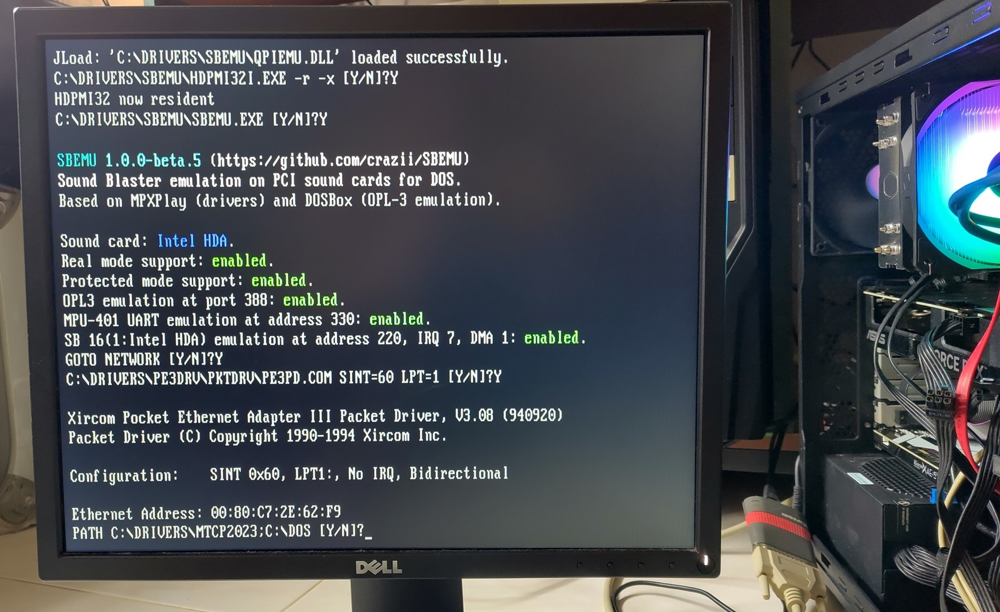The audio driver is provided by SBEMU. It’s a relatively new project that provides Sound Blaster compatibility to modern sound hardware like Intel HD Audio standard and many other sound chips. It clearly works on this AMD system too.
For the Xircom adapter, Packet Drivers can be easily found online so it is compatible with the useful MTCP DOS networking utilities.
Additional Issues encountered
Not everything went smoothly. I encountered several issues new and old that I don’t have any answer to at the moment. As you can imagine, some are problems that will not have easy online solutions.
So I decide to document them here in case another person encounters a similar issue.
Motherboard may not POST with unsupported RAM
When I first powered up the system with my new RAM, it initially did not even POST. It got indefinitely stuck in what I believe was RAM training.
I believe a BIOS update is required for the motherboard to recognise the new RAM. But if you can’t even start the board, you can’t update the BIOS! It’s a catch-22 situation. This motherboard does not have the BIOS flashback feature available on other Asus boards to update the BIOS without CPU and RAM.
To get around this, I got another lower-speed DDR5 stick to at least get the board to POST then I updated the BIOS to the latest version.
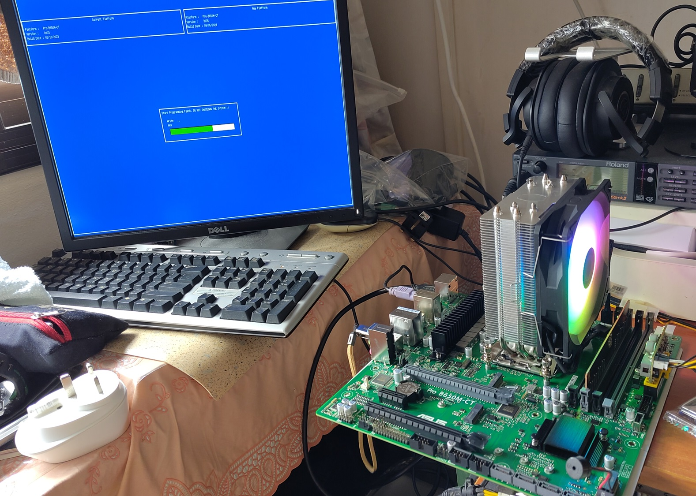I powered the motherboard with a PicoPSU separately and did the BIOS update which was originally from an early 2023 version.
Some DOS games run too fast
From the video at the top, the Descent game runs too fast to be playable. This is a common behaviour for some DOS games on newer systems as they were written for the slower CPUs of decades ago.
To mitigate this, tools like Setmul and CpuSpd were created to allow people to slow down the CPUs.
I tried both tools and they did not seem to work well on this CPU. The only available option was to disable L1 cache. When I did so, the system went to the other extreme and slowed to a crawl that games became too slow to be playable.
I don’t blame the tools as they are not meant to be used for such modern CPUs.
USB drives with no partitions or empty floppy drives not detected in real mode
I observed this strange case when I was installing DOS. I wiped all the partitions in my target USB flash drive to prepare for DOS to be installed onto it.
When I booted from the DOS setup floppy disk, the USB flash drive was not presented as a fixed disk for DOS setup or fdisk to work on.
I had to create a dummy FAT16 partition manually using other tools before booting the system. After getting the fixed disk drive (of the USB disk) to be visible in DOS, I then use DOS fdisk’s tool to recreate the primary partition and format it so that DOS is able to use it.
I suspect this is a motherboard BIOS issue as empty drives are not presented as a viable boot or fixed disk option.
Parallel port no EPP or IRQ feature
THe Xircom PE3 driver and Enhanced Parallel Port (EPP) utility currently detects my parallel port as a standard bidirectional printer port with no interrupt (IRQ). This is despite a higher performance setting of Enhanced Parallel Port (EPP) and Interrupt 5 has been enabled in the BIOS.
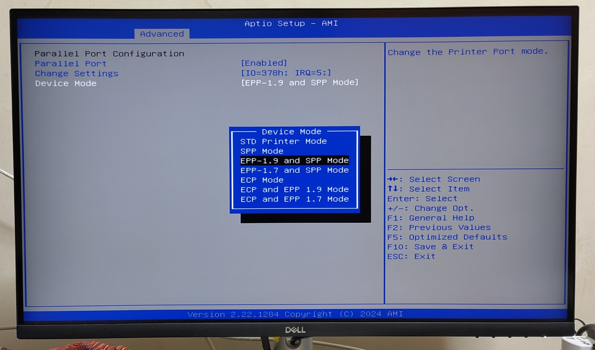The BIOS confirms the parallel port can be configured to a native address to match early PCs with EPP feature.
Without the ability to use the higher performance option, the PE3 works at a relatively slow speed of 100KB/s.
Conclusion
Although DOS is obviously not relevant for most day-to-day uses today, it was certainly an interesting learning experiment for me to explore ways of bridging modern hardware with its earliest roots.
The fact that a 30-year-old MS-DOS 6.22 can still work well enough on such modern hardware is testament to the efforts made by the industry to ensure good x86 PC backward compatibility. AMD, Nvidia and Asus deserve to be commended on their efforts here.
I’m also impressed that the modern Nvidia Geforce 4060 Ti still supports some legacy video BIOS modes to a usable level although this is not complete. I didn’t document in this blog post but brief tests with other VESA modes especially CGA and EGA didn’t work well. Best to stick with VGA and up.
I wonder how long more this amount of x86 PC backward-compatibility will continue to last though… It definitely feels like the end is near.
If you have not seen the demo video above, I asked ChatGPT if this machine can run DOS.
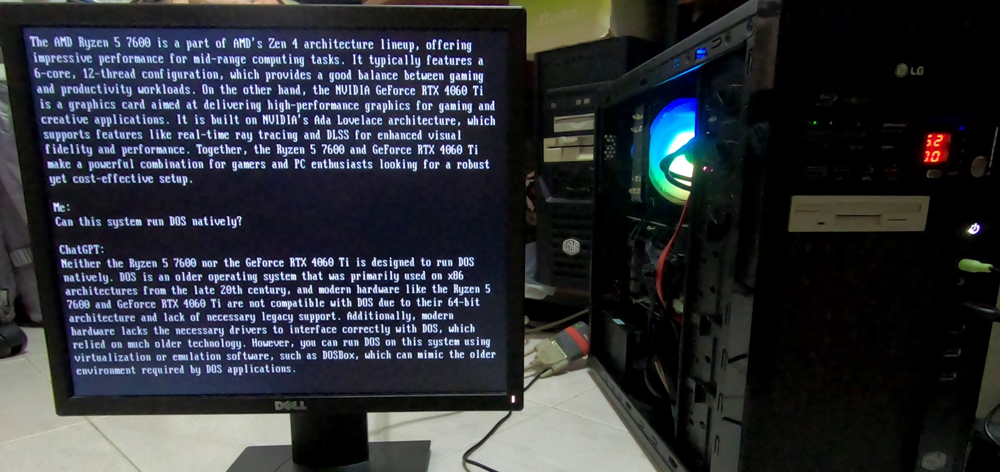I think I just proved ChatGPT wrong :P
If you like this article, you may consider reading my earlier post on getting MS-DOS 6.22 working on a modern Thinkpad.


{kind=link}
{kind=link}
{kind=link}
{kind=link}
{kind=link}
{kind=link}
{kind=link}
{kind=link}
{kind=link}
{kind=link}
{kind=link}
{kind=link}
{kind=link}
{kind=link}
{kind=link}
{kind=link}
{kind=link}
{kind=link}
{kind=link}
{kind=link}
{kind=link}
{kind=link}